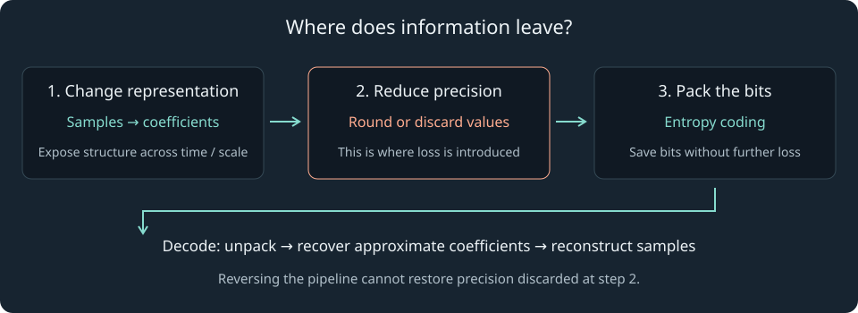

From the basics of smaller files to the question of what a
compressed brain recording should preserve. Follow the five modules
in order, or jump to a topic below.
A waveform can change while a useful pattern survives. The
opposite is also possible. These traces are synthetic, not
recorded EEG.
WHY COMPRESSION MATTERS
Every sample has to go somewhere.
Photos, streamed music and scientific recordings all compete for
storage and bandwidth. Compression represents data using fewer
bits, making it easier to store and transmit.
The important question is what must survive. A ZIP archive should
recover every original byte. An audio codec may discard detail
that is difficult to hear. A brain recording needs a different
test: can we still extract the information we care about?
More data. More modalities. More to move.
Modern computing increasingly learns from data rather than relying
only on rules written by hand. Large language models learn from
large collections of text. Multimodal models bring images, audio and
other observations into the same system. A robot has to connect what
its cameras and sensors observe with language, motion and actions.
Data is both the material these systems learn from and the stream
they must handle while operating.
As we record for longer, add sensors and increase resolution, the
storage and communication burden grows. Combining modalities
multiplies the streams: a single robot interaction may contain
several camera views, a spoken instruction and a sequence of sensor
readings. Keeping and moving all of this can become a bottleneck,
especially on a wireless link or a small device.
This is why compression matters beyond saving space on a hard drive.
A smaller representation can reduce transfer time and make limited
storage go further. But compression itself costs computation, and
discarding the wrong information can make a downstream system less
useful. The challenge is to reduce the data while retaining what the
application needs.
For example,
PaLM-E combines
language, vision and sensor-state inputs, while
RT-2 learns
from vision-language data and robot trajectories. These are examples
of the motivation for handling multimodal data efficiently, not
claims that our EEG compressor improves those systems. Here we study
compression of recorded inputs, rather than compression of model
weights.
EEG gives us a small, concrete version of this broader problem. Many
channels are sampled continuously, yet the information needed for
one decision may be only a small part of the recording. How do we
decide what is safe to leave out?
A LITTLE ARITHMETIC
Watch the data add up.
Uncompressed payload only. File headers and metadata add more.
AT 250 SAMPLES / SECOND / CHANNEL
19.2 MB
A storage calculation, not a measured compression result. MB
uses 1,000,000 bytes.
These are some important data compression techniques across
different modalities: general-purpose files, audio, images and
sampled signals. Some remove redundancy without losing information;
others trade precision or detail for fewer bits. We will use these
ideas as the foundation for our EEG experiments.
Lossless
Huffman coding
Give frequent symbols shorter codes and rare symbols longer ones.
A prefix-free code can be decoded without separators. Savings
depend on the symbol counts.
Symbol
Count
Fixed code
Huffman code
Toy four-symbol alphabet: fixed coding uses 2 bits/symbol. Message
bits only; a real format must also store or agree on its codebook.
Lossless
ZIP & DEFLATE
Think of a ZIP file as a package: it holds files together with
information such as their names and sizes. The compression method
inside the package does the work of making their contents smaller.
ZIP supports several methods; here we use a common one called
DEFLATE.
The idea is to describe repeated data more economically, without
throwing anything away. DEFLATE brings together two ideas:
1. Replace repetition with copy instructions
(LZ77).Instead of writing a sequence again, record how far back to
look and how many bytes to copy. New bytes are written
directly; repeated sequences can use these references.
2. Encode the instructions compactly (Huffman
coding).The Huffman idea from above applies to the remaining
symbols: common symbols can receive shorter bit codes.
DEFLATE supports predefined or data-dependent codebooks, and
can also store blocks without compression.
A small example: to reconstruct
HELLOHELLOHELLO, write HELLO, then “go
back 5 bytes and copy 5 bytes”, then repeat that instruction.
The decoder gets all 15 letters back exactly. These are teaching
instructions, not actual ZIP syntax; such a tiny file may grow
once the instructions and file headers are included.
Try it: does the order of bytes matter?
Compare a repeated block with a shuffled copy. Both contain
exactly the same counts of each byte, but shuffling breaks up
the repeated sequences. Predict which will be smaller, then
measure. Random bytes provide another contrast.
Run the browser demonstration to see measured sizes.
256 KiB inputs, seed 321. Actual ZIP sizes include headers. This
foundation demonstration is separate from the EEG experiments.
Why can't we keep zipping forever?
After compression, fewer useful patterns usually remain for the
same method to exploit. Zipping an existing ZIP often saves little
or makes it larger, because another package adds overhead.
Likewise, noise and already-compressed files can offer little
saving. Lossless means exact recovery, not a guarantee of a
smaller file.
Digital sound is a sequence of measurements of a sound wave,
called samples. MP3 aims to store that sound using fewer bits
while keeping it perceptually similar. It is
lossy: playback does not reproduce every original
sample exactly.
From a waveform to a smaller file
1. Examine short stretches of sound.Filters and transforms represent their frequency content:
roughly, how much low- and high-pitched sound is
present.
2. Decide where precision matters most.A model of hearing estimates what a listener may notice. For
example, a loud sound can mask a quieter nearby frequency. The
encoder can use coarser quantization there: rounding values to
fewer possible levels. This introduces error.
3. Pack the resulting values efficiently.Huffman coding saves more bits without further loss. The
decoder unpacks the values and reconstructs an approximate
waveform. It cannot undo the earlier rounding.
What does the bitrate control?
Bitrate is the number of encoded bits per second of audio. A lower
bitrate gives the encoder a smaller budget, usually requiring
coarser approximations. Errors may become audible, depending on
the sound and settings. Re-encoding decoded audio may add loss;
raising the bitrate afterwards cannot restore discarded detail.
The EEG connection: “hard to hear” is not an EEG
preservation criterion. We evaluate reconstructed EEG using
waveform error and a defined recognition task.
Try fewer amplitude levels. Which parts of the signal lose detail?
Uniform quantization places equally spaced levels across a chosen
amplitude range. With b bits there are 2b
levels. μ-law first applies a logarithmic compander: it gives
relatively finer resolution near zero and coarser resolution at
larger magnitudes, then quantizes.
Original synthetic signalReconstruction
Illustrative samples normalized to [−1, 1]. The error is computed
from these samples. This continuous μ-law model is not a bit-exact
G.711 codec and does not establish the best method for EEG.
PNG applies reversible scanline filters, then DEFLATE
compression. It preserves the encoded image samples exactly and
supports transparency. Repeated structure can help it compress;
unstructured noise is harder.
Usually lossy
JPEG: reduce spatial detail.
The common DCT-based JPEG pipeline transforms small image
blocks, quantizes their coefficients, then entropy-codes them.
Coarser quantization can reduce storage while introducing block
boundaries, ringing or lost texture. Color subsampling can also
discard detail.
The shared idea
Transform, quantize, encode.
Spatial frequency describes how pixel values change across an
image. JPEG's DCT is related to Fourier analysis, but is not the
DFT. As with EEG, a small numerical error and preservation of
useful information are different goals.
Real browser encoding of the same opaque 256 × 256 image; complete
PNG/JPEG file sizes include headers. RGB RMSE compares decoded
JPEG samples with the source canvas on a 0–255 scale. Encoder
quality is a setting, not a percentage of retained detail. Results
depend on the browser; PNG is not guaranteed to be larger.
Previews are enlarged to expose artifacts. No EEG data is used
here.
Thresholding & dithering
Suppose an image can use only black and white.
Thresholding compares each grayscale value with a
cutoff: darker values become black and brighter values become
white. It is simple, but a smooth gradient turns into a sharp
boundary, and subtle shading disappears.
Dithering uses patterns of black and white pixels
to suggest intermediate shades. In Floyd–Steinberg error
diffusion, we quantize one pixel, calculate its rounding error,
then distribute it to unprocessed neighbours: 7/16 to the right,
and 3/16, 5/16 and 1/16 to the lower-left, lower and lower-right
pixels. The dots retain a sense of shading when viewed together;
they do not recover the original grayscale samples.
Both outputs below use one bit per pixel once packed, compared
with eight bits for the grayscale input. That is a lossy reduction
in representation size. An image format must still store
dimensions and other metadata, and lossless coding may save more.
Dithering adds texture, which can affect compressibility: the two
one-bit images need not produce equally sized ZIP files.
8-bit grayscaleThresholding / 1 bit per pixelFloyd–Steinberg / 1 bit per pixel
Measuring the pixel representations…
Synthetic 128 × 128 grayscale example. Display canvases use
browser RGBA buffers; the reported one-bit sizes come from
actually packing the binary pixel arrays. Pixel payload sizes
exclude dimensions and palette; the measured ZIP sizes include
archive headers but still assume that image interpretation is
agreed separately. These archives are a byte-coding demonstration,
not standalone PNG files.
The default cutoff of 128 gives the usual midpoint binary quantizer;
moving the control explores a different cutoff.
Electroencephalography records voltage differences using electrodes
on the scalp. Each channel is a time series; together they provide a
view of population-level neural activity.
New to EEG? Start with the electrodes, then follow the samples into
the time and frequency views below.
What are we recording?
Scalp EEG is non-invasive. It predominantly reflects cortical
activity, mixed as it travels through tissues to the electrodes.
It is not a recording of one isolated neuron or a direct readout
of a person's thoughts.
Electrodes are arranged using conventions such as the 10–20
system. Sampling produces amplitude values for each channel.
Time-domain and spectral analysis reveal different aspects of
those sequences.
From scalp to samples
ElectrodesMeasure voltage differences relative to a reference.
AcquisitionAmplification, filtering and analog-to-digital
conversion.
Multichannel signalOne sequence per channel, with timing and recording
metadata.
AnalysisWaveforms, frequency content and task-specific
features.
Each channel measures a voltage difference, not an isolated brain
region. Electrode location and the reference influence the trace.
THE FREQUENCY VIEW
Rhythms, not mind-reading.
Band boundaries are conventions. Associations depend on location,
state and task.
Band
Approximate frequency range
What it commonly represents
Delta
0.5–4 Hz
Slow activity that is especially prominent during deep,
slow-wave sleep. Delta activity is also common in young
children; its interpretation depends on age, wakefulness and
where it appears.
Theta
4–8 Hz
Often becomes more prominent during drowsiness and early
sleep as the waking background slows. Theta is also common
in children, so its presence alone does not identify a
particular thought or task.
Alpha
8–13 Hz
The posterior alpha rhythm is often strongest over the back
of the head during relaxed wakefulness with eyes closed. It
usually weakens when the eyes open, illustrating how rhythms
can change with sensory input.
Beta
13–30 Hz
Faster, usually lower-amplitude activity seen during normal
wakefulness, often more evident toward the front of the
scalp. Its strength can also be affected by medication and
muscle activity, so more beta does not simply mean more
thinking.
Gamma
Above 30 Hz
Fast activity studied in relation to sensory and cognitive
processing. Scalp gamma measurements are particularly
vulnerable to muscle contamination, so high-frequency power
is not automatically evidence of neural activity.
Eye blinks, muscle activity, movement and electrical interference
can contaminate EEG. A compressor can preserve an artifact
accurately or distort a useful low-amplitude pattern. “Looks
smoother” does not automatically mean “contains better neural
information.”
Three tasks, three feature types. SSVEP
recognition uses a sustained response at a flicker frequency;
motor imagery uses changes in rhythmic power across motor-related
channels; P300 detection uses a brief response following an
attended event. We compare how compression affects these different
applications using recorded EEG.
Reconstruct the exact input representation. Useful as a
trustworthy control.
Signal shape
Waveform fidelity
Measure reconstruction error and inspect time and frequency
views.
The analysis
Task fidelity
Measure accuracy and individual decision changes with a fixed
decoder.
Our pipeline:
EEG segment · encode under a byte cap · reconstruct · frozen task
decoder.
Quantization and coefficient selection introduce loss. ZIP preserves
the resulting coded representation exactly.
Others have already asked how much useful information survives.
A compressed brain recording is useful only if we can still do
something useful with it. The literature gradually turns that simple
thought into several different questions.
Imagine recording EEG for hours. Every electrode contributes a
stream of samples, and every sample needs a place in memory or a
packet on a communication link. The obvious first question is
whether we can store the same recording more efficiently. The less
obvious question is whether we need every recorded detail for the
analysis we have in mind.
Consider an illustrative recording with 64 channels, 256 samples per
second per channel and 16 bits per sample. That is 262,144 bits
every second, or about 2.83 GB over 24 hours, before file headers
and other metadata. Double the number of electrodes or the recording
duration and the payload doubles too. These are calculated example
sizes, not measurements from our dataset.
As Dao and colleagues explain, long-term monitoring makes storage
and transmission practical concerns. In a wearable system, the
question also includes battery energy and processing cost: a smaller
transmission is useful, but the device must spend computation to
create it. A compressor therefore has to fit the device and the
application, as well as reduce the file size.
Why EEG is harder than a repeating pattern
EEG has structure, but it is not a fixed template repeated over and
over. Rhythms change with time, channels share some activity while
retaining local differences, and brief events can interrupt the
background signal. The survey highlights these irregular, transient
events as a difficulty. A description that works well for one
segment, channel or participant need not work equally well for
another.
This creates a tension: repetition across time and channels is an
opportunity to save bits, yet an unusual event may be exactly what
an analysis needs. A small coefficient or short-lived change cannot
be declared unimportant just because it contributes little to the
average signal energy. Unlike MP3's hearing-based objective, EEG
compression needs a preservation criterion tied to the intended
measurement or task.
First, keep every value. Then, allow a little error.
This is not a new problem. Back in 1999,
Memon, Kong and Cinkler
compared general-purpose and predictive lossless EEG coding, then
explored near-lossless coding with bounds on the introduced error.
It is a useful starting point: exact recovery gives a clear promise,
while controlled loss opens up a different trade-off.
Transforms provide another way to find structure. Rather than coding
the time samples directly, we can describe them using coefficients
and spend fewer bits on some of those coefficients.
Higgins and colleagues (2013)
studied coefficient quantization and thresholding in wavelet-based
EEG compression. Our simple sample-domain quantizer belongs to the
same broad discussion about precision, but it is not a reproduction
of their wavelet method.
The 2015 survey helps organize the classical approaches. Wavelets
describe activity at different time scales; filter banks split the
signal into bands; predictors use past or related samples to
estimate what comes next; and dictionary methods describe segments
using a collection of reusable patterns. Each tries to expose
structure that is harder to exploit in the raw samples. Their
published compression ratios are not a fair leaderboard: datasets,
recording precision and allowed distortion differ.

An original teaching diagram inspired by the survey's three-stage
explanation. DFT, DCT and wavelets are transforms, not quantizers.
Loss enters through discarding or approximating values; the final
entropy coder need not introduce further loss. Our experiments
compare sample quantization with DCT-based coding; they do not
implement a wavelet codec.
Smaller by how much? Different by how much?
Two quantities recur in the survey.
Compression ratio (CR) is original bytes divided by
compressed bytes. For example, 1,000 bytes reduced to 250 bytes
gives CR = 4:1: the result occupies 25% of the original size, a 75%
saving. A larger CR means a smaller representation relative to that
baseline. Always check what is counted: packed samples alone, or a
complete file with the metadata needed to decode it?
Percentage root-mean-square difference (PRD) asks
how large the reconstruction error is relative to the original
signal. The survey defines it as follows, with x the
original samples and x̂ the reconstructed samples:
PRD = 100 × √[Σ(x − x̂)² / Σx²]
Square each sample's error, add those errors, normalize by the
original signal's squared values, then take the square root and
express it as a percentage. Zero means exact reconstruction; smaller
is closer under this measure. It is undefined when the denominator
is zero.
The denominator matters. A large constant offset increases Σx²
without necessarily making useful brain activity easier to preserve.
Some studies therefore use a mean-removed denominator, and those
values should not be compared blindly. Our reported NRMSE uses
deviations from each channel's mean in the denominator and is a
fraction, not a percentage. Multiplying it by 100 gives a
mean-normalized error percentage, which is not automatically the
same as the survey's PRD.
The survey discusses a 10% PRD criterion used in earlier work, but
that is not a universal clinical safety threshold. Its discussion
also describes studies testing seizure detection after
reconstruction: the task outcome adds evidence that a waveform error
alone cannot provide. Here we compare SSVEP, motor imagery and P300
decoding. Preserving these decisions does not establish suitability
for seizure detection or clinical interpretation.
Two questions about the same reconstructed recording. A small
error and an unchanged decision are different kinds of evidence.
This is a conceptual diagram, not measured EEG.
A close waveform is only part of the story.
If a recording is going to drive a particular decision, it makes
sense to test that decision after decompression. In an SSVEP task,
for instance, we want to identify the flickering target a
participant attended to.
Zhang and colleagues (2022)
explicitly evaluated recognition after personalized SSVEP
compression, combining a transform, learned reconstruction and
nonuniform quantization. So asking how compression affects
recognition is established work, rather than a novelty claim for
this project.
There is another subtle choice: should the recognition system adapt
to the compressor?
Strypsteen and Bertrand (2023)
jointly learned source coding and inference for a motor-execution
task in an emulated wireless EEG network. That allows the inference
model to learn with the representation it will receive. We ask a
narrower question: what happens when we compress a recording but
keep the existing decoder fixed?
Learning what to store
Neural compressors try to learn compact representations from data.
Wang, Zhang and Wu (2024)
used a lightweight encoder with a richer reconstruction network,
evaluating ERP and motor-imagery recordings. The asymmetry is
practical: the device collecting the signal may have less compute
available than the system reconstructing it.
The training data matters too. The
EEG/iEEG BrainCodec paper by Carzaniga and colleagues (2025)
explored transfer from cleaner intracranial recordings to scalp EEG,
with reconstruction, downstream-task and expert evaluations. It is a
reminder that a good result on one signal source does not
automatically give us a safe setting for another.
Audio compression offers a useful comparison with EEG.
Kastrati and colleagues' 2025 preprint
adapts neural audio codecs to EEG by addressing differences in
sampling, framing and channels. This is more careful than simply
saving EEG as ordinary MP3. Meanwhile,
Xie's ADaCoRe preprint (2026)
combines compression with protected timepoints and confidence-based
selection of replay examples for continual learning. Both are recent
directions; we treat their findings as provisional.
One storage budget. Three different kinds of information.
EEG tasks use different features. Compression changes those features
differently. We therefore give several compressors the same storage
allowance and test which task-and-decoder combinations retain useful
performance. A frequency-based decision, a spatial pattern and a
brief event-related response need not react to the same distortion
in the same way.
Our benchmark uses
Lee and colleagues' OpenBMI dataset, which records SSVEP, motor imagery and ERP responses from the
same participants using the same acquisition setup. This reduces a
major confound in cross-task comparisons, although each task still
needs its own decoder and has a different original difficulty.
Experiment 1: Which application loses performance fastest?
We compare uniform quantization, μ-law quantization and a DCT-based
pipeline. Each must fit the same allowance in actual bytes per
second per channel, including the information needed to reconstruct
its signal. For each task we train or calibrate a lightweight
decoder on original data, freeze it, and measure how its performance
changes on reconstructed test recordings. Balanced accuracy and its
change from the original baseline let us inspect the
storage–performance trade-off.
Experiment 2: Does the ranking depend on the compressor?
At a fixed budget, we compare the performance loss across all three
applications and compression pipelines. If the order changes, a task
cannot simply be called compression-resistant or
compression-sensitive: the method matters too. Participant-level
results reveal whether an average ordering is consistent or driven
by one recording.
This is a small controlled benchmark, not an established universal
ranking. Our conclusion stays local: under these budgets, methods,
decoders and recordings, which application lost performance fastest?
A weak original baseline or a tie is reported rather than hidden.
References and access notes
Follow the same storage allowance through three different EEG
applications.
Can we shrink a brain recording without changing the answer we get
from it? We tried three kinds of EEG tasks and three ways of
compressing them. The interesting part is that the task which
suffered most changed with the method.
Imagine making a recording smaller by rounding its numbers or
leaving out some detail. It will probably look a little different
afterwards. But will the computer still recognize what the person
was doing? That is the question behind these experiments.
We wanted a variety of signals, not five variations of the same
test. Our three applications depend on different patterns: a
repeated rhythm, an imagined movement and a brief response to a
flash. We gave each the same storage allowance and measured how much
recognition performance was lost.
Three ways to ask EEG a question
Following a flickering target: SSVEP
When someone attends to a flickering target, the EEG can contain
activity at the flicker frequency and its harmonics—multiples of
that frequency. Our computer compares the recording with four known
frequency patterns and chooses a target. The task is to preserve a
sustained rhythm well enough to recognize it.
Imagining a movement: motor imagery
Here the person imagines moving their left or right hand. The
computer looks for differences in rhythmic activity across
electrodes near motor-related brain regions. There is no flicker
frequency telling it the answer; the useful information is a pattern
across channels.
Recognizing an attended flash: P300
In this task, some flashes are relevant to the person and others are
not. The computer uses the brief EEG response after each flash to
distinguish targets from non-targets. We test individual flashes,
rather than the accuracy of a complete spelling system. The measured
response can contain more than just the P300 component.
Keep the people and the comparison consistent.
We used existing recordings from the
OpenBMI dataset. The same six participants completed all three tasks using the
same recording setup. Two participants were used for development
checks; the results below come from the other four.
For each person, we used an earlier part of the original recording
to train or calibrate the decision system, which we call the
decoder. We tested it on a later part, leaving a
gap between training and testing. The SSVEP decoder uses known
frequency templates; the other two learn from the earlier labeled
examples.
Then we kept that decoder fixed. We compressed the test recording,
reconstructed it from the saved file, and asked the same decoder to
make its decisions again. It could not learn to compensate for each
compression method. This isolates the effect on an existing analysis
system.
The experiment in one sentence: keep the people,
stored channels and decision system consistent; change how much
information the file can hold; measure what happens to the answers.
What does a storage allowance mean?
An EEG channel is one stream of voltage measurements. Our selected
recordings use 12 channels, each sampled 128 times per second.
Storing each number as a 32-bit value takes 512 bytes per second per
channel, before compression. This is our chosen input
representation, not a claim about the recording device's original
precision.
We tried four smaller allowances. Think of them as four increasingly
roomy boxes into which each second of EEG must fit:
Allowance, bytes/s/channel
Share of our input size
What it means
32
6.25%
The tightest box: most aggressive compression
64
12.5%
More room to preserve detail
128
25%
A quarter of the original allowance
256
50%
The most generous compressed setting
The allowance includes the file headers and information needed to
reconstruct the signal. All tasks store the same 12 channels, so
equal per-channel allowances also mean equal total storage rates.
Methods do not always fill their boxes exactly: their actual sizes
are available in the detailed tables below.
Three ways to fit the recording into the box
Uniform quantization rounds every sample to one of
a limited number of evenly spaced values. Fewer possible values mean
fewer bits, but more rounding error.
μ-law quantization spends precision differently: it
provides finer resolution near zero and coarser resolution for
larger amplitudes. It is a different compromise, not a guarantee of
better EEG preservation.
DCT-based compression describes each short stretch
using coefficients for slower and faster variations. It retains a
prefix of those coefficients, rounds their values, and leaves the
remaining coefficients out.
All three methods finish with bit packing and ZIP. The rounding and
omitted coefficients introduce the loss; ZIP adds no further loss.
For each one-second stretch, the encoder tries a predefined set of
settings and chooses the least waveform error that fits the budget.
It sees the input signal, but never the correct task answers or the
decoder's predictions.
First check how well the original recordings work.
We use balanced accuracy: calculate the recognition
score separately for each class, then give those scores equal
weight. This matters for P300 because non-target flashes are more
common. Repeatedly guessing “non-target” should not produce a
misleadingly impressive score.
Loading the measured experiment results…
The starting points are different. SSVEP begins near 89%, while
motor imagery begins near 62% against a 50% chance level. A small
change therefore need not have the same practical importance in both
tasks. We keep these baselines visible throughout the comparison.
See each participant's starting score
EXPERIMENT 1
What happens as the storage box gets smaller?
We measure the difference between the original and compressed
scores. Falling from 80% to 75% is a loss of
five percentage points, written as 5 pp. Lower
loss is better. A negative loss means the compressed recording
produced a slightly better score.
In every plot, the left side is the tightest allowance and the
right side is the most generous. The lines show the four-person
average; they connect measured settings and do not represent extra
experiments. All three plots use the same vertical scale.
Rounding evenly: all three tasks struggle at the tightest setting.
Uniform quantization + ZIP. Lower lines mean less performance
lost. Open the plot for a larger view.
At 32 bytes/s/channel, the losses are fairly close: 8.48 pp for
SSVEP, 9.48 pp for motor imagery and 8.92 pp for P300. Motor
imagery falls from 62.41% to 52.94%, only a little above chance.
SSVEP loses a similar number of points but still scores 80.47%.
Giving the file more room helps. At the 64-byte allowance, P300 is
already close to its original score, while the other two tasks
still lose several points. At 256 bytes, the losses are zero or
tiny.
Changing the precision: μ-law helps some tasks more than others.
μ-law quantization + ZIP. Values below zero are small
improvements over the original score.
The tightest setting now hurts P300 most: it loses 9.18 pp, while
SSVEP loses 5.17 pp and motor imagery loses 3.30 pp. The
application with the largest loss has changed, even though the
people and storage allowance are the same.
At 128 bytes, motor imagery and P300 improve slightly over their
original scores. This does not establish that compression improves
EEG analysis. It can change which examples are right or wrong, and
this is a small cohort. Noise reduction is another possible
explanation, but we have not tested it separately.
Keeping coefficients: DCT preserves P300 particularly well here.
DCT-based compression + ZIP. The near-flat P300 line means its
average score changes very little.
This is the clearest contrast. At the 32-byte allowance, P300
loses just 0.10 pp with DCT, compared with 8.92 pp for uniform
quantization and 9.18 pp for μ-law. SSVEP now has the largest mean
loss, at 4.57 pp.
A possible explanation is that retaining slower DCT components
fits well with our P300 decoder, which also focuses on
low-frequency response information. That is an interpretation of
this particular pipeline, not proof that P300 is always easy to
compress.
EXPERIMENT 2
So, is there one hardest task?
We now look across the compression methods at a fixed allowance.
This is a second view of the same measurements, not a new
collection of recordings. If one task were consistently hardest to
preserve, we would expect it to show the largest losses across
methods.
Start with 32 bytes/s/channel below. Motor imagery has the largest
mean loss under uniform quantization, P300 under μ-law, and SSVEP
under DCT.
There is no single hardest task in this comparison.
Change the allowance to see how the order changes.
All four allowances together. Red means a score decrease; blue
means an increase. Numbers are percentage-point losses. Open the
image to read the full-size matrix. Tiny differences at generous
allowances should not be treated as a meaningful task ranking.
A similar score can hide different answers.
With DCT at the tightest allowance, P300 loses only 0.10 pp overall.
Yet about 4.9% of its individual predictions change. Some changes
correct earlier mistakes; others create new ones. The effects mostly
cancel in the average. “Almost the same score” does not mean “the
same decision on every flash.”
Waveform similarity tells a different story too. At the tightest
allowance, μ-law changes the SSVEP waveform more than uniform
quantization under our normalized-error measure, yet loses fewer
recognition points: 5.17 pp rather than 8.48 pp. The decoder needs
particular patterns, not a perfect copy of every sample.
What we learned—and where the evidence stops.
Our result is not a league table of brain tasks. It is evidence that
preservation depends on the combination of task, decoder,
compressor and storage allowance. P300 looks fragile under one method and remarkably well preserved
under another. Whether the same ordering holds with other people or
analysis systems remains an open question.
Four evaluation participants and one recording session are a small
test. Starting performance varies: one participant's motor-imagery
score is below chance before compression. We retain that participant
and flag the weak baseline, rather than selecting only favorable
recordings. A task that starts near chance has little useful
performance left to lose.
The useful next step would be to repeat the comparison with more
participants and more than one decoder per task. For now, our claim
stays local: under these methods, budgets and recordings, the
application with the largest performance loss changes with the
method.
Explore the interactive curves and full measurements
The compact tables above show average score losses. Here you can
also inspect actual file rates, waveform error and participant
ranges. NRMSE measures normalized waveform error; lower is closer
to the original. A participant range is not a confidence interval.
Above-chance retention is (compressed balanced accuracy − chance)
divided by (original balanced accuracy − chance), using
participant means. 100% means the original advantage over chance
remains; 0% means chance performance. It can be negative or exceed
100%. We withhold it when the original mean is within five
percentage points of chance. It does not remove task or decoder
differences.
Inspect individual results at the selected allowance
This table follows the allowance selected in Experiment 2.
Technical setup and checks
We use session 1 labeled offline blocks from S01–S06. S01–S02 are
development participants; S03–S06 are evaluated. The split is at
60% of events with a two-second guard. SSVEP and motor-imagery
epochs last four seconds; ERP epochs last one second. Overlapping
ERP test epochs share one encoded continuous recording, so their
samples are not repeatedly charged to the storage count.
The shared montage has 12 channels, resampled to 128 Hz and
filtered from 0.5 to 40 Hz. SSVEP uses CCA with three harmonics;
motor imagery uses 8–30 Hz filtering, CSP and shrinkage LDA; ERP
uses 0.5–12 Hz filtering, 100 ms time averages and shrinkage LDA.
Filtering is offline and noncausal, not a real-time deployment.
Each one-second encoded frame includes packed codes, scales,
dimensions and its ZIP overhead. Length prefixes and the corpus
header count too. Decoder models and task annotations are agreed
separately for all methods. μ-law uses μ = 255 and is not a
bit-exact G.711 implementation.
All 216 conditions, including development runs, fit their byte
caps. The lossless control reproduces the selected float32 samples
exactly. Metrics were checked against exported predictions, and
all 144 evaluation reconstructions were independently replayed
through their original-data decoders. We make no clinical,
battery-life or real-time performance claim.